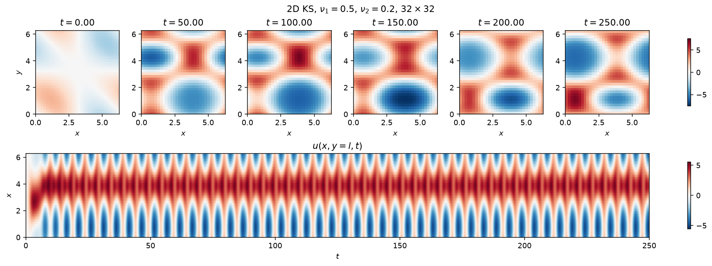
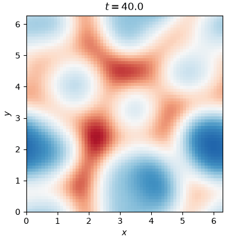
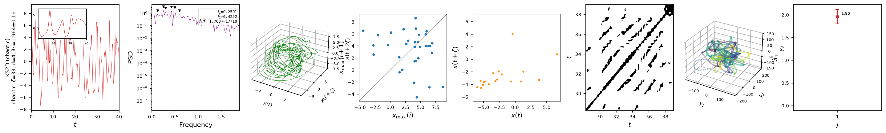

Kuramoto-Sivashinsky (2-D)
The two-dimensional, anisotropic extension of the 1-D Kuramoto-Sivashinsky equation adds a second spatial direction with its own hyperviscosity \(\nu_2\),
doubly periodic, with anisotropy ratio \(\alpha=\nu_2/\nu_1\). The state is the
physical field itself (not its Fourier transform, as in the 1-D case),
flattened to shape (Nx * Ny, m). Which regime the equation settles into —
periodic, travelling, quasiperiodic, or chaotic — depends on \((\nu_1, \nu_2)\);
five named regimes are pre-tabulated in CASES and selected with
case='...'. The class defaults are the periodic regime.

Top: six snapshots of the field \(u(x,y,t)\) at \(\nu_1=0.5\), \(\nu_2=0.2\) (the periodic regime), evenly spaced past the transient. Bottom: space-time diagram of the mid-domain slice \(u(x, y=\ell, t)\), showing the pattern travel across the domain and repeat.
A single snapshot, or a 1-D slice's space-time diagram, cannot show how the
whole 2-D field evolves. For the chaotic regime, an animation does:

case='chaotic' (\(\nu_1=\nu_2=0.1\), \(64\times64\)): the field \(u(x,y,t)\)
past the transient, sampled every few output steps. Structures merge, split
and drift with no repeating pattern -- the two-dimensional analogue of the
cellular chaos on the 1-D KS page.
Quickstart
from dynamodels.physical import KS2D
model = KS2D() # class defaults are the periodic regime; try case='chaotic' too
psi, t = model.time_integrate(Nt=4000)
model.update_history(psi, t)
model.visualize_spatiotemporal_hist()
model.close()
| Regime | \(\nu_1\) | \(\nu_2\) | Grid | \(\mathrm{d}t\) |
|---|---|---|---|---|
periodic (default) |
0.5 | 0.2 | 32x32 | 0.01 |
travelling |
0.5 | 0.35 | 32x32 | 0.1 |
quasi-periodic |
0.5 | 0.1 | 32x32 | 0.01 |
chaotic |
0.1 | 0.1 | 64x64 | 0.01 |
chaotic_B |
0.3 | 0.1 | 64x64 | 0.01 |
Explicit keyword arguments override a case's values, e.g.
KS2D(case='chaotic', Nx=128, Ny=128).
Nonlinear diagnostics

Diagnostics from ntsa.characterize on the chaotic case,
at a single grid point, left to right: the observable time series with a
zoomed inset; power spectral density; the 3-D delay-embedded portrait; the
first-return map of the maxima; a plane-crossing Poincare section; a
recurrence plot; a 3-D classical-MDS embedding of the full 2-D field; and
the leading Lyapunov exponent, estimated Jacobian-free from perturbation
growth since KS2D steps with time_step rather than time_derivative.
Reference
Kuramoto, Y., & Tsuzuki, T. (1976). Persistent propagation of concentration waves in dissipative media far from thermal equilibrium. Progress of Theoretical Physics, 55(2), 356-369.
API
dynamodels.physical.kuramoto_sivashinsky_2d.KS2D
Bases: Model
Anisotropic two-dimensional Kuramoto-Sivashinsky equation.
doubly periodic, with anisotropy ratio \(\alpha = \nu_2/\nu_1\). Solved pseudo-spectrally (full 2-D FFT) with the ETDRK4 scheme; the exponential coefficients are evaluated by the Kassam-Trefethen contour integral. The zero mode is projected out at every step (the equation only defines \(u\) up to a constant), so the field stays zero-mean.
The state is the PHYSICAL field flattened to shape (Nx*Ny, m) -- real valued, so observables are plain state rows and ensemble filters need no complex-state handling.
Known regimes on the default \(\ell = \pi\) domain (see the qlROM-DA study):
| regime | nu1 | nu2 | grid | dt | t_transient | t_CR |
|---|---|---|---|---|---|---|
| periodic | 0.5 | 0.2 | 32x32 | 0.01 | 100. | 10. |
| travelling | 0.5 | 0.35 | 32x32 | 0.1 | 100. | 10. |
| quasi-periodic | 0.5 | 0.1 | 32x32 | 0.01 | 100. | 10. |
| chaotic | 0.1 | 0.1 | 64x64 | 0.01 | 40. | 4. |
| chaotic_B | 0.3 | 0.1 | 64x64 | 0.01 | 100. | 10. |
The class defaults are the 'periodic' regime; pass case='chaotic' etc.
(see CASES) to select another. Explicit kwargs win over the case values,
e.g. KS2D(case='chaotic', Nx=128, Ny=128).
Source code in dynamodels/physical/kuramoto_sivashinsky_2d.py
19 20 21 22 23 24 25 26 27 28 29 30 31 32 33 34 35 36 37 38 39 40 41 42 43 44 45 46 47 48 49 50 51 52 53 54 55 56 57 58 59 60 61 62 63 64 65 66 67 68 69 70 71 72 73 74 75 76 77 78 79 80 81 82 83 84 85 86 87 88 89 90 91 92 93 94 95 96 97 98 99 100 101 102 103 104 105 106 107 108 109 110 111 112 113 114 115 116 117 118 119 120 121 122 123 124 125 126 127 128 129 130 131 132 133 134 135 136 137 138 139 140 141 142 143 144 145 146 147 148 149 150 151 152 153 154 155 156 157 158 159 160 161 162 163 164 165 166 167 168 169 170 171 172 173 174 175 176 177 178 179 180 181 182 183 184 185 186 187 188 189 190 191 192 193 194 195 196 197 198 199 200 201 202 203 204 205 206 207 208 209 210 211 212 213 214 215 216 217 218 219 220 221 222 223 224 225 226 227 228 229 230 231 232 233 234 235 236 237 238 239 240 241 242 243 244 245 246 247 248 249 250 251 252 253 254 255 256 257 258 259 260 261 262 263 264 265 266 267 268 269 270 271 272 273 274 275 276 277 278 279 280 281 282 283 284 285 286 287 288 289 290 291 292 293 294 295 296 297 298 299 300 301 302 303 304 305 306 307 308 309 310 311 312 313 314 315 316 317 318 319 320 321 322 323 324 325 326 327 328 329 330 331 332 333 334 335 336 337 338 339 340 341 342 343 344 345 346 347 348 349 350 351 352 353 354 355 356 357 358 359 360 361 362 363 364 365 366 367 368 369 370 371 372 373 374 375 376 377 378 379 380 381 382 383 384 385 386 387 388 389 390 391 392 393 394 395 396 397 398 399 400 | |
ETDRK4_f_terms
property
ETDRK4 coefficient arrays (Nx, Ny) for the constructed (nu1, nu2), recomputed if dt changed.
__init__(**model_dict)
Initialize the 2D KS model.
Parameters:
| Name | Type | Description | Default |
|---|---|---|---|
**model_dict
|
Model parameters; supported keys are:
|
{}
|
Source code in dynamodels/physical/kuramoto_sivashinsky_2d.py
76 77 78 79 80 81 82 83 84 85 86 87 88 89 90 91 92 93 94 95 96 97 98 99 100 101 102 103 104 105 106 107 108 109 110 111 112 113 114 115 116 117 118 119 120 121 122 123 124 125 126 127 128 129 130 131 132 133 134 135 136 137 138 139 140 141 142 143 144 145 146 147 148 149 150 151 152 | |
get_observables(Nt=1, loc=None, **kwargs)
Observable state at the sensor locations (the state is already the physical field, so observables are plain rows of the flattened state).
Parameters:
| Name | Type | Description | Default |
|---|---|---|---|
Nt
|
int
|
Number of time steps to retrieve. Default is 1. |
1
|
loc
|
array - like or str
|
Flattened-grid sensor indices; 'all' returns the whole field; None (default) uses the model's sensor locations. |
None
|
Source code in dynamodels/physical/kuramoto_sivashinsky_2d.py
164 165 166 167 168 169 170 171 172 173 174 175 176 177 178 179 180 181 182 183 184 185 186 187 188 | |
ETDRK4_step(u, terms=None)
One ETDRK4 step of physical fields u with shape (Nx, Ny, m).
terms defaults to the shared coefficients; per-member (Nx, Ny, m)
stacks from _terms_for are used as-is.
Source code in dynamodels/physical/kuramoto_sivashinsky_2d.py
268 269 270 271 272 273 274 275 276 277 278 279 280 281 282 283 284 285 286 287 288 289 290 | |
time_step(Nt=10, averaged=False, alpha=None)
Advance all m members Nt ETDRK4 steps.
Parameters:
| Name | Type | Description | Default |
|---|---|---|---|
alpha
|
list of dict
|
Per-member parameter dicts (as from |
None
|
Returns:
| Name | Type | Description |
|---|---|---|
psi |
ndarray
|
Trajectory of shape (Nt + 1, Nphi [+ Na], m), including the current state; estimated-parameter rows are carried unchanged. |
t |
ndarray
|
Time points, shape (Nt + 1,). |
Source code in dynamodels/physical/kuramoto_sivashinsky_2d.py
292 293 294 295 296 297 298 299 300 301 302 303 304 305 306 307 308 309 310 311 312 313 314 315 316 317 318 319 320 321 322 323 324 325 326 327 328 329 330 331 332 333 334 335 336 337 338 339 340 341 342 343 | |
get_energy(Nt=0, u=None)
Spatially averaged L2 energy, E = mean(u^2), shape (Nt, m).
Source code in dynamodels/physical/kuramoto_sivashinsky_2d.py
345 346 347 348 349 350 351 352 | |
get_enstrophy(Nt=0, u=None)
Spatially averaged enstrophy, mean(u_x^2 + alpha u_y^2), shape (Nt, m).
Source code in dynamodels/physical/kuramoto_sivashinsky_2d.py
354 355 356 357 358 359 360 361 362 363 364 | |
visualize_spatiotemporal_hist(nframes=6, member=0, **kwargs)
Snapshot strip of the physical field u(x, y) for one ensemble member, plus a space-time diagram of the mid-domain slice u(x, y = l, t).
Source code in dynamodels/physical/kuramoto_sivashinsky_2d.py
366 367 368 369 370 371 372 373 374 375 376 377 378 379 380 381 382 383 384 385 386 387 388 389 390 391 392 393 394 395 396 397 398 399 400 | |